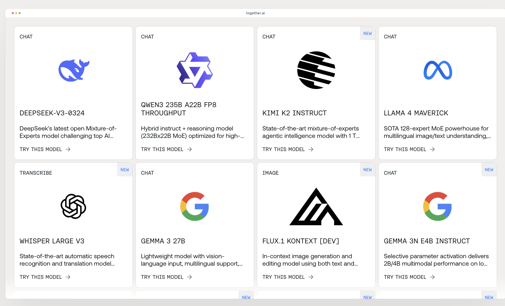

Info

ü§ñ Why Agentic AI & These Technologies Matter
- üéØ Agentic AI systems represents the next evolution in AI systems and Customer Service.
- they can autonomously plan, execute, and adapt to achieve complex goals, making it useful for real-world applications.
- They can be used for Deep Research where agents need to find the best information from the web and other sources and synthesize it into a coherent report.
- Vibe Coding: Enables rapid prototyping and development with AI assistance, making coding more efficient
- Gradio: Simplifies the creation of interactive web interfaces for using AI models
- RAG (Retrieval-Augmented Generation): Combines external knowledge with AI generation, enabling more accurate and up-to-date responses
- MCP (Model Context Protocol): Provides standardized ways for AI agents to interact with tools and external systems
- A2A (Agent-to-Agent): Enables AI agents to communicate and collaborate with each other for more sophisticated multi-agent systems
- Deep Research: Enables AI Agents to search for data from the web and other sources and synthesize it into a coherent report.
- HuggingFace Spaces: A HuggingFace Space is a way to deploy your AI Apps with the world

Task 0
üëã Introduce Yourself
üìù Action Items:
- üìã Join our Discord server: https://discord.gg/Gu839g95GD
- üì¢ Share a brief introduction about yourself in the #introduction channel
- Example: "Hi, I’m Issam Laradji. I’m a Research Scientist at ServiceNow, where I work on Deep Research, and an Adjunct Professor at UBC. I completed my PhD at UBC and did my postdoc at McGill. Outside of work, I enjoy hosting board games on the beach with a BBQ. I’m passionate about developing agentic AI to make customer service much easier, so we can spend more time enjoying the best things in life!"
Task 1
⚙️ Set Up Your Integrated Development Environment (IDE)
üìù Action Items:
- ⚡ Install Cursor on your laptop
- it's highly recommended that you use Cursor as your AI-powered coding assistant throughout the hackathon.
- üêç Test that you can run Python from your terminal (I recommend Python 3.12):
- üìù Create a file called hello_world.py
- ✍️ Add this line: print("hello world")
- ▶️ Run it with: python hello_world.py
- üêç Vibe Coding:
- üìù Create a fancy hello world program with the help of Cursor
- ✍️ Share a screenshot of your code output to the #share-your-work Discord channel
Task 2

ü§ñ Build Your First AI-powered Code with Together.ai
See Relevant Scripts: Hackathon Scripts
üìù Action Items :
- üîÑ Use Together.ai for powering your Apps with AI
- üîë Sign up with Together.ai
- You will get a free $1 credit to access different LLMs online
- Retrieve the API key to use for the LLMs
- ü߆ Write a script that uses a small Llama model
- Create a new file called
llm_gen.pyand have it run an LLM to generate a structured output about practical usecase such as "what should I do in Vancouver today?" - Run the code as
export TOGETHER_API_KEY=python llm_gen.py - Share the output on #share-your-work Discord channel
- Create a new file called
- üé® Write a script that uses an image generation model like Flux
- Create a new file called
image_gen.pyand have it run an LLM to generate an image and text for that image like an Instagram post such as about your favorite video game - Share the output on #share-your-work Discord channel
- Create a new file called
Task 3
üí¨ Create Interactive Chatbots with Gradio
See Relevant Scripts: Hackathon Scripts
üìù Action Items:
- ü§ñ Create a dummy chatbot that only replies with a certain sentence
- Create a new file called
dummy_chatbot.py - Use Gradio (recommend version 5.37.0)to create a simple web interface
- Make it respond with a random message regardless of input
- Create a new file called
- ü߆ Write a smart chatbot that uses the LLM to respond
- Create a new file called
smart_chatbot.py - Integrate your Together.ai API key with the chatbot
- Create a Gradio interface that connects to the LLM
- Adapt it to a domain of interest, for example:
- a duffy duck chatbot for a restaurant customer service
- a Gandalf who is a therapist
- a chatbot that can answer questions about the weather
- a chatbot that can answer questions about the stock market
- Share your chatbot output to the #share-your-work Discord channel
- Create a new file called
Task 4
üîç Implement RAG for Precise Knowledge Retrieval
See Relevant Scripts: Hackathon Scripts
üìù Action Items:
- üîÑ Sign up for a free account in HuggingFace and create an api key
- üîÑ Set the
HUGGINGFACE_API_KEYenvironment variable in your terminal - üîÑ Run the following command in your terminal:
export HUGGINGFACE_API_KEY= - üìö First run the
rag_example.pyfile to see how RAG works- This will create a vector database of the documents in
data_dictvariable
- This will create a vector database of the documents in
- üîç Create a
rag_chatbot.pyfile that uses therag_example.pyfile to create a chatbot that can answer questions about the documents indata_dictvariable- Use policies for a domain of interest such as a restaurant or a company
- An example list of policies could be:
- Refund Policy
- Privacy Policy
- Whether babies are allowed in the restaurant
- Whether the restaurant is open on weekends
- üß™ Test & Share your RAG-powered chatbot
- Share your RAG chatbot screenshots to the #share-your-work Discord channel
Task 5
üöÄ Deploy Your RAG-Powered Chatbot to HuggingFace Spaces
üìù Action Items:
- üîÑ Go to HuggingFace Spaces:
- Create a new space
- Upload your chatbot code as
app.py - Create a
requirements.txtfile with the dependencies - Test that your app builds and runs successfully on HuggingFace
- üîó Share your updated Hugging Face Space URL in the #share-your-work Discord channel
Task 6
üîç Basic Deep Research with DuckDuckGo
See Relevant Scripts: Hackathon Scripts
üìù Action Items:
- Create a new file called
deep_research.pythat can get a set of urls based on user input and then use an LLM to synthesize the information into a set of 5 bullet points of insights - üîç Use DuckDuckGo to search for information on a topic of interest
- üîç Use an LLM that synthesizes the top 3 results into a set of 5 bullet points of insights
- üîç Share the output on the #share-your-work Discord channel
Task 7
üîó Learn About MCPs (Model Context Protocol) - Send a Text to a Phone Number
See Relevant Scripts: Hackathon Scripts
üìù Action Items:
- üîß Sign up for a free account in Surge and create an api key
- Go through the relevant scripts for Task 7 and copy the
mcp_server.pyandmcp_client.pyfiles to your project - Create
private/surge_config.json, then run themcp_server.pyfile and then themcp_client.pyfile to see how MCP works - Modify it to send a cool text message to your phone
- üîó Share a screenshot of your output with the text message in the #share-your-work Discord channel
Task 8
üöÄ Integrate Deep Research and MCP into your Chatbot App
üìù Action Items:
- Create a Chatbot
chatbot.pythat takes the user input, and uses the web to get the most relevant information and then uses an LLM to synthesize the information into a set of insights - The chatbot should also send a text message to your phone using MCP about these insights
- üîó Share your updated Hugging Face Space URL in the #share-your-work Discord channel